2020-08-15
666
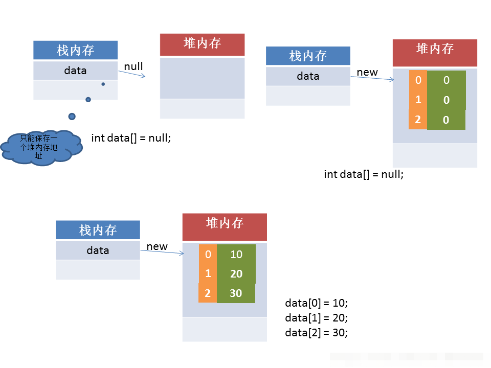
原创
数组
一、数组的定义
数据结构中最基本的一个结构就是线性结构，而线性结构又分为连续存储结构和离散存储结构。所谓的连续存储结构其实就是数组。 在数组中每个元素都具有相同的数据类型，是有序数据的集合。通俗的说数组就相当于一个容器。数组分为一维数组、二维数组和多维数组。
数组可以看成是多个相同类型数据组合，对这些数据的统一管理。 数组变量属引用类型，数组也可以看成是对象，数组中的每个元素相当于该对象的成员变量。 数组的元素可以是任何数据类型，包括基本类型和引用类型。C和C++中的数组都可以分配在栈上面，而JAVA中的数组是只能分配在堆上面的，因为JAVA中的数组是引用类型。
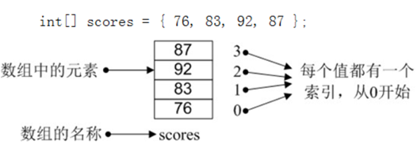二、数组的分类
数组是最熟悉也是最基础的一种结构了，有限个相同数据类型的元素按顺序排列的集合为数组。数组的数据是连续的，有上界下界，在其中的元素都有属于自己的索引值，即下标，通过这些下标就能定位到数组值。 根据维度的不同可以将数组分为一维数组、二维数组、三维数组等等，以此类推。
1.一维数组
数据结构中最基本的一个结构就是线性结构，而线性结构又分为连续存储结构和离散存储结构。所谓的连续存储结构其实就是数组。 在数组中每个元素都具有相同的数据类型，是有序数据的集合。通俗的说数组就相当于一个容器。数组分为一维数组、二维数组和多维数组。
创建一个长度为10的数组:
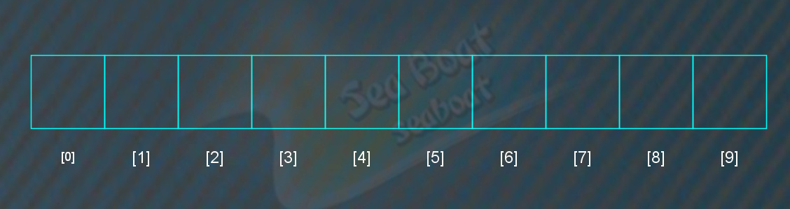如果将 11,22,33,44四个数字放到数组中:
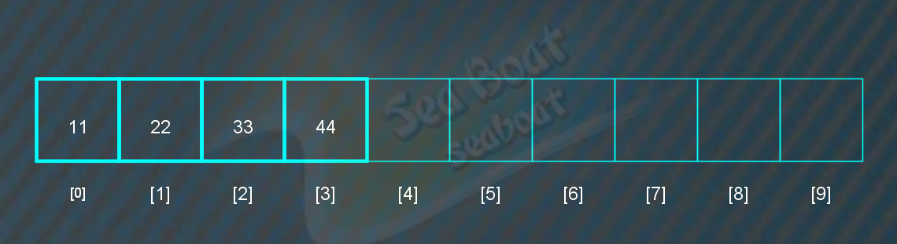如果将 "the","monster","is","coming"四个字符串放到数组中
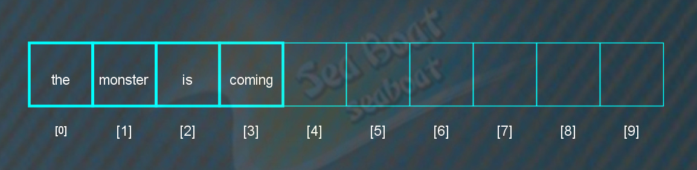找数组的下标为0和3保存的字符串
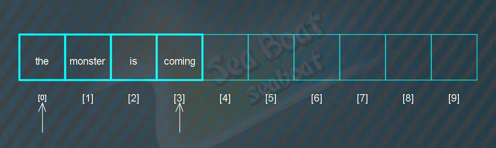数组大小为10，则下标范围为0到9，如果超出范围则越界，导致错误

2.二维数组
二维数组也称为矩阵，因为是二维的，所以需要两个下标才能确定一个元素，即行下标和列下标。创建一个3行10列的二维数组（矩阵），一共可存放30个元素:
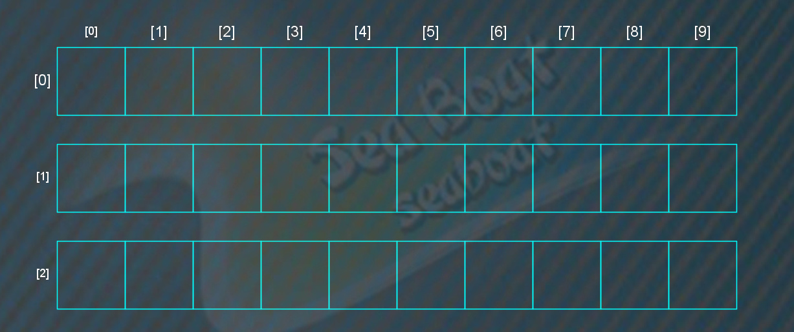将 "the","monster","is","coming"四个字符串分别放到数组(0,1)(2,2)(2,6)(1,4)四个坐标上
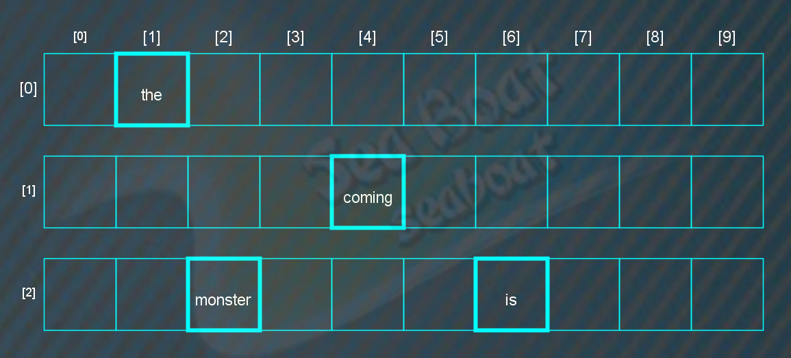找数组中(2,6)(1,4)坐标中保存的字符串
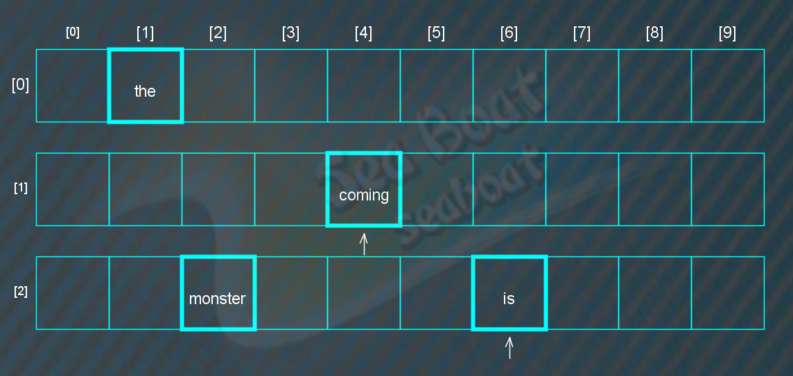3.三维及更高维数组
三维数组即由三个维度组成的数组，是最常见的多维数组，由三个不同的下标参量去描述数组中的元素。
按照正常思维，我们常常会用现实世界的三维空间来对应三维数组以进行理解，但我不建议通过这样来映射，这样的思维方式不助于理解更高的维度，因为你很难用现实世界来想象四维五维或更高维。
所以建议以索引的形式来理解，每个维度都可以看成是一层索引，三维的情况则可以看成如下：
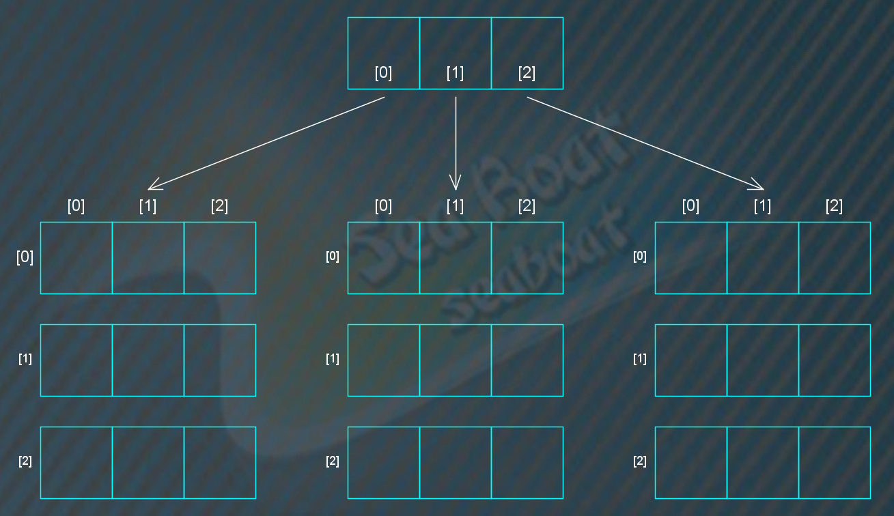比如将”the”放到(0,1,2)坐标中，更高维度则可以继续往上抽取一维，类似树结构。
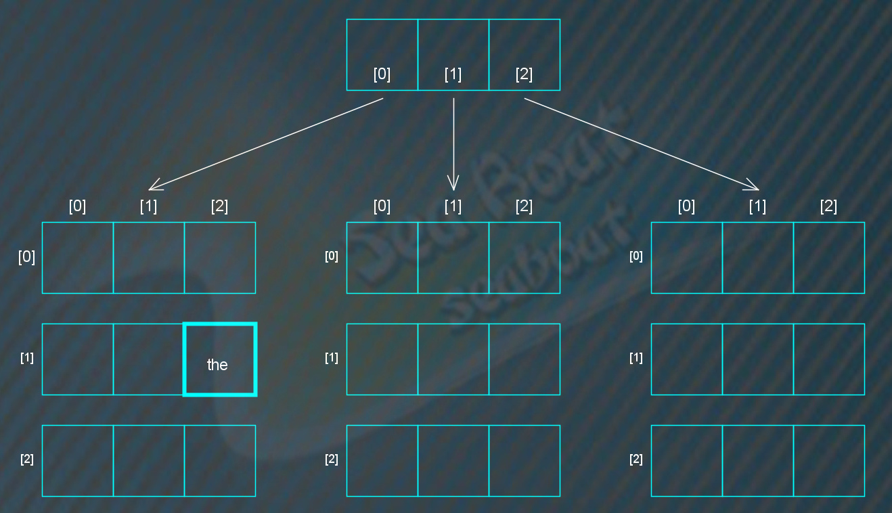三、数组的本质和特点
1.数组的本质
数组本质其实也是数据的一种存储方式，既然有了数据的存储，就会涉及到如何对数据进行寻址的问题。 首先，先说一下在数组中数据是如何存储的，在内存中，数组中的数据是以一组连续的数据集合的形式存在于内存中。 当我们访问存在于内存中的数组时，我们应该找到其在内存中的地址， 当我们找到数据的地址后我们就可以找到对应的数据。了解了以上知识后，我们就可以进行数组的设计了。
2.数组的特点
数组的特点如下：
- 1) 数组的长度一旦定义则不可改变；
- 2) 数组的元素都有整数索引；
- 3) 数组只能存储同一类型的元素；
- 4) 数组既可以存储基本数据类型，也可以存储引用数据类型；
- 5) 数组类型是从抽象基类Array派生的引用类型；
- 6) 数值数组元素的默认值为0，而引用元素的默认值为null；
- 7) 数组中存放元素的类型必须与创建数组时声明的类型相一致；
- 8) 数组的类型可以是任意数据类型，包括基本数据类型和引用数据类型，如String[]、int[] 、float[]…；
- 9) 数组的索引是从0开始的，如果数组有n个元素，那么它的最大索引为n-1，（数组索引的取值范围[0,n-1]）
3.数组的优点
支持随机访问： 如上文所说，数组存于连续的地址空间，并且存储的是相同类型的数据，这使得数组可以通过下标与数据类型的大小直接定位到数据位置。
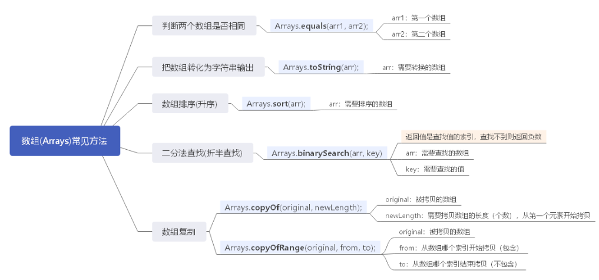4.数组的缺点
插入效率低:因为数组要保证插入后数据的连续性，需要将插入位置后面的数据依次向后进行移动，所以插入的效率很低。插入时最好的情况是在数组末尾插入，时间复杂度为O(1)； 最坏的情况是在数组起始位置插入，时间复杂度为O(n)；插入的平均时间复杂度为 (1+2+…+n)/n = O(n)。
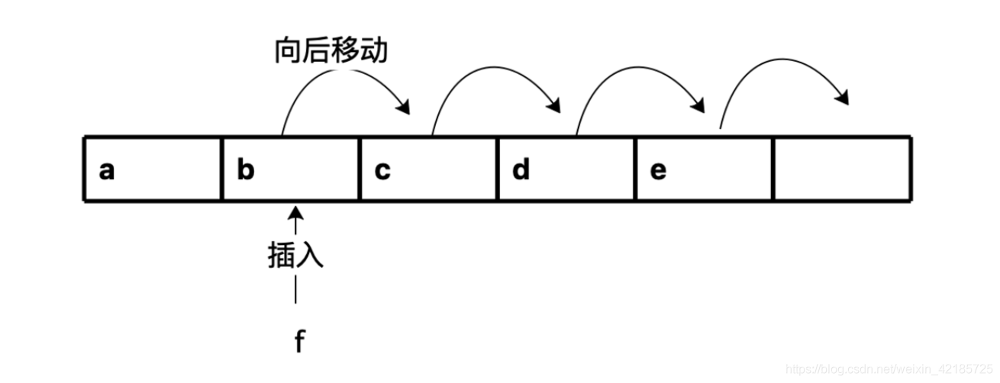优化方法:如果数组内元素不要求有序时，可以将原数组中第k个数据插入到数组末尾，然后将想要插入的数据插入到第k个位置即可。如上图示例，可以将元素b插入到数组末尾，再将f插入到b原来的位置。
删除效率低:也是因为要保证删除后数据的连续性，需要将删除位置后面的元素依次向前进行移动，所以删除的时间复杂度和插入一样。即最好的情况是删除末尾数据， 时间复杂度为O(1)；最坏的情况是删除起始位置数据，时间复杂度为O(n)；删除的平均时间复杂度为O(n)。
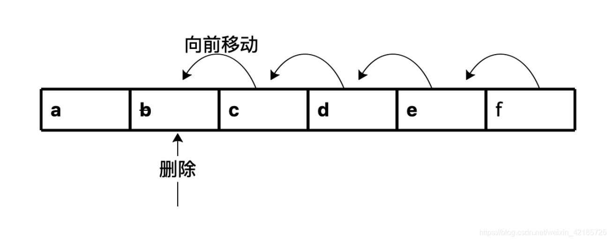优化方法:在允许数组内存在无用数据的前提下，需要删除多个数据时可以采用标记删除法，即先不进行实际删除操作，而是先将所有需要删除的数据标记为被删除状态，最后再进行一次删除操作清除掉所有被标记的元素。
上面的优化思路可以参考jvm的垃圾收集算法：jvm的垃圾回收算法中最基础的收集算法是’标记-清除‘算法。顾名思义， 标记清除算法分为’标记‘和’清除‘两个阶段：首先标记出所有需要回收的对象，在标记完成后统一回收所有被标记的对象，参考下图：
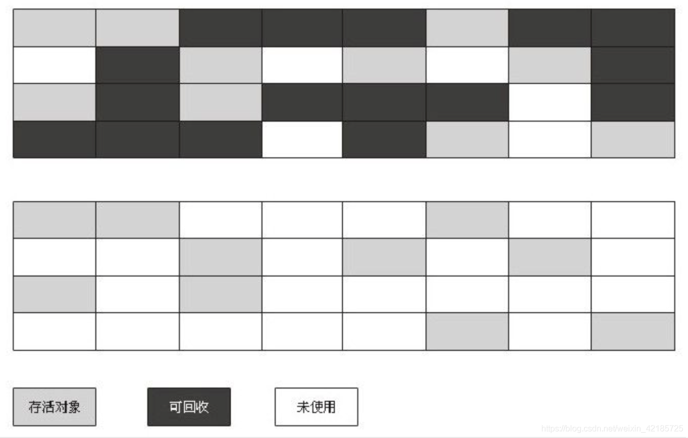四、矩阵的压缩存储
有些特殊矩阵，非零元素呈某种规律分布或者矩阵中出现大量的零元素的情况下，会占用许多单元去存储重复的非零元素或零元素， 这对高阶矩阵会造成极大的浪费，为了节省存储空间，对这类矩阵进行压缩存储——即为多个相同的非零元素只分配一个存储空间；对零元素不分配空间
对称矩阵中元素关于主对角线对称，故只要存储矩阵中上三角或下三角中的元素，让每两个对称的元素共享一个存储空间，这样能节约近一半的存储空间。
特殊矩阵：所谓特殊矩阵是指非零元素或零元素的分布有一定规律的矩阵，如对称矩阵、三角矩阵、对角矩阵等等。
三角矩阵：以主对角线划分，三角矩阵有上三角和下三角两种。上三角矩阵它的下三角中的元素均为常数。下三角矩阵正好相反，它的主对角线上方均为常数。
n2 个元素可以压缩到 n（n+1）/2个空间中，除了记录非零元素的值之外，还必须同时几下它所在的行和列的位置。 稀疏矩阵的存储方法一般有三种：三元组法、行逻辑连接顺序表和十字链表法。